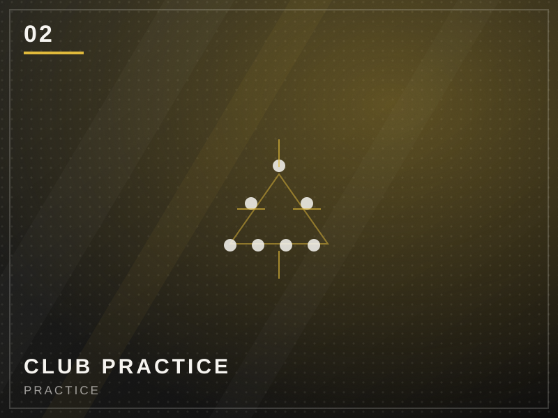
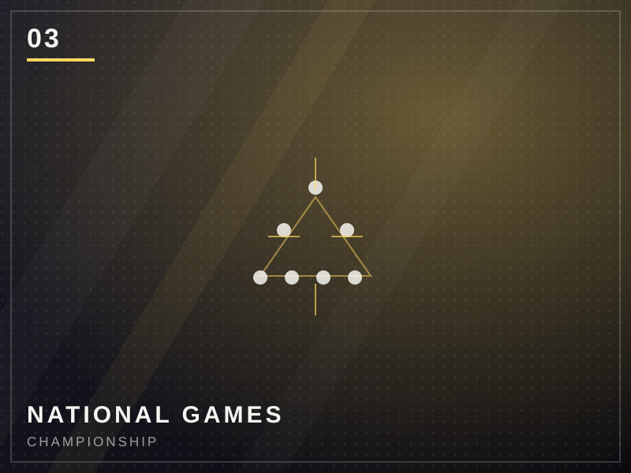
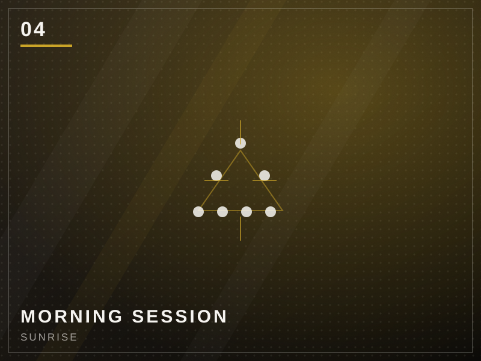
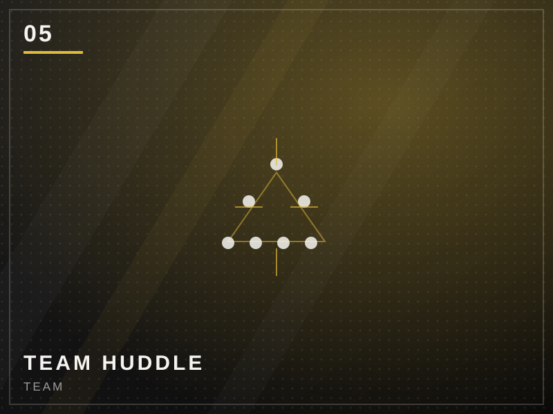
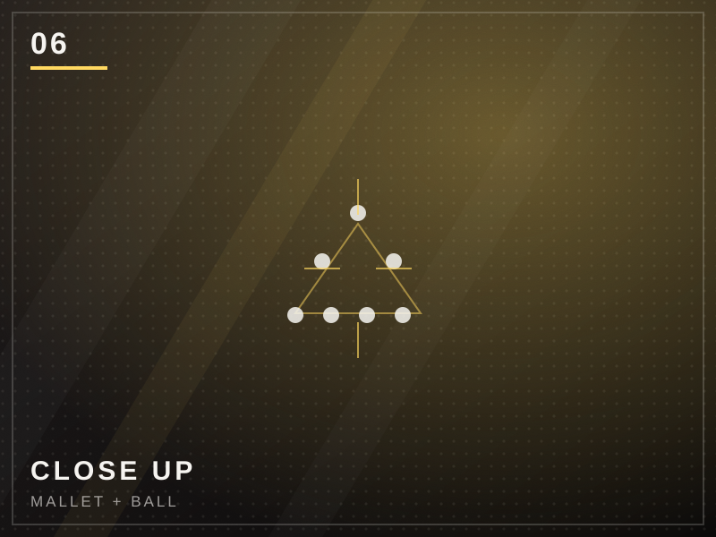
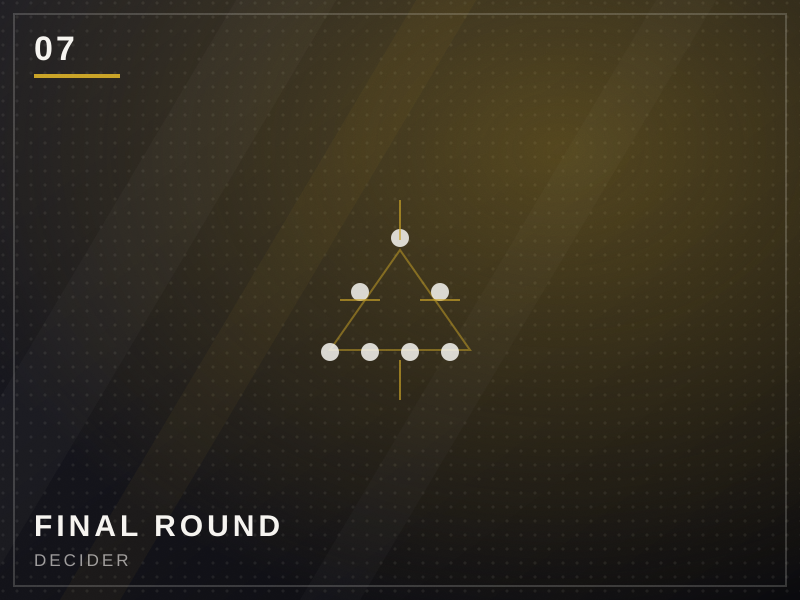
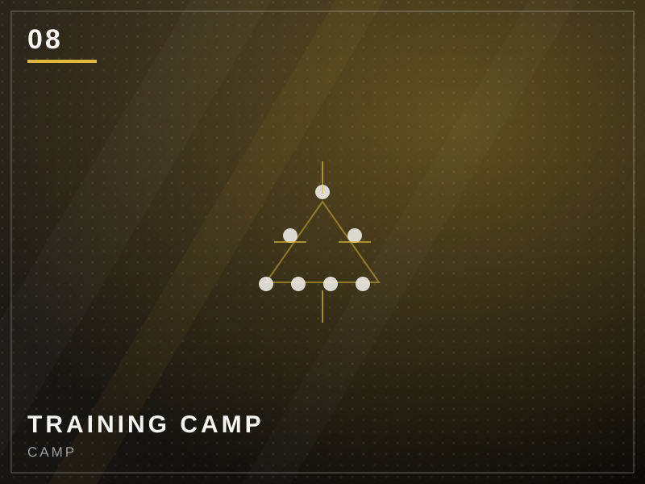
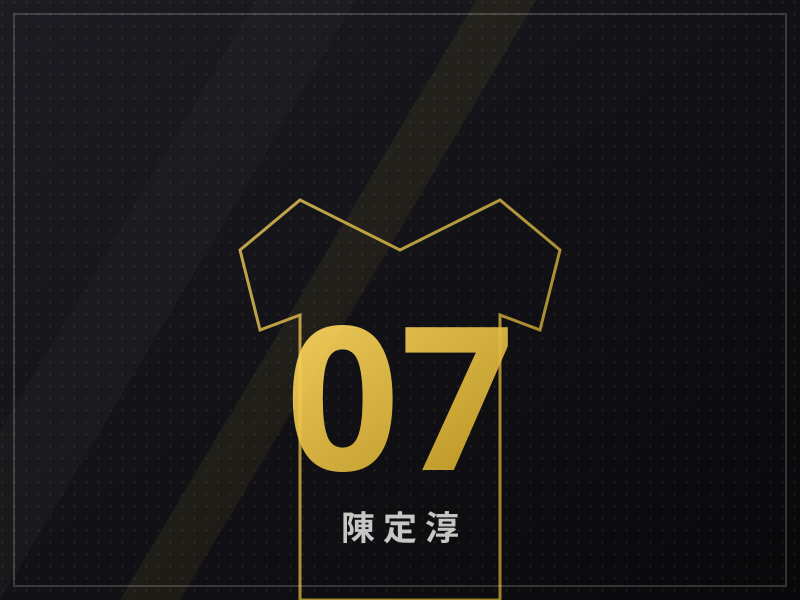

Woodball 是什麼
木球起源於 1970 年代的南非，後傳入台灣推廣。球場由兩個扇形區（backswing area）與中間的共享得分區（shared fairway）構成，球員以球桿將球擊向遠端木樁，越過對方得分線後反向回擊。
- 無守備、全靠角度與力道控制
- 球體表面有旋轉紋路，飛行路徑會產生偏移
- 一場比賽＝多局累積比分，體能與心理都是考驗
WOODBALL ATHLETE / CLUB PRESIDENT / NATIONAL GAMES
以美式競技的強度對待每一場木球。從社團基層到全國賽場，
我用球桿丈量距離、用汗水兌換成績。
01 / MY WOODBALL
木球（Woodball）是一項融合棒球揮擊邏輯與高爾夫推桿技巧的球類運動。 場上沒有守備球員，你面對的只有一顆球、兩道界線，和無盡的計算。
木球起源於 1970 年代的南非，後傳入台灣推廣。球場由兩個扇形區（backswing area）與中間的共享得分區（shared fairway）構成，球員以球桿將球擊向遠端木樁，越過對方得分線後反向回擊。
我的主力球桿是木製槌頭配碳纖維桿身，重量集中在頭部，擊球瞬間能量傳遞更直接。球鞋選擇抓地力強的釘鞋，下盤穩定是長距離推進的關鍵。
02 / CLUB PRESIDENT
從社團幹事到扛下社長的位置，我學會的不是怎麼贏，而是怎麼讓一群人一起變強。
高一入學加入木球社，第一次社內練習就因為握桿姿勢錯誤把球打飛出界。學長說了一句「重來」，我從那天開始每天放學留下來加練。
TAG · ROOKIE接下隊長一職，負責訓練排程、器材維護與比賽報名。帶領社團拿下縣內賽團體亞軍，也開始練習如何當別人的榜樣。
TAG · CAPTAIN正式接任社團負責人。做的事很雜：招募新生、寫企劃、找場地、跟教練談訓練量、拉贊助。學期裡最常深夜修改檢討報告，但看到社團人數從 12 人成長到 30 人，覺得都值得。
TAG · PRESIDENT推動社團走進社區，與鄰近國小舉辦友誼賽，也帶隊參與北區分區挑戰賽。開始把比賽經驗整理成教材，交接給學弟妹。
TAG · OUTREACH建立社團訓練排程表、比賽檢討流程與影音紀錄，讓社團能持續運作。目標是讓 Woodball 從「有社」變成「有文化」。
TAG · LEGACY03 / NATIONAL MIDDLE SCHOOL GAMES
全國中等學生運動會。全國最強的學生賽事之一，也是我確認「我想一直打球」的轉捩點。
全國前三名
FINALIST
全國賽前的練習賽裡，我的直線推桿很穩，但一到交叉界線就失分。教練看完比賽錄影只說了一句：「你一直在用蠻力，沒在用角度。」回去之後我重新計算每一球的出手角度，把練桿時間一半改成練思考。
記憶最深的一局。第五局最後兩球連續失誤，觀戰的學弟在場邊喊加油。最後一球我選擇保守推進，拿到關鍵分。贏球不是靠神技，是靠沒有放棄下一球。
全國賽結束後，我把比賽用球、戰術筆記跟訓練表全部帶回社團，開了四場社內分享會。我希望下一屆的人不需要重新摸索一次。
04 / RECORDS
每一場比賽都是一份可以累積的資料。以下為近幾年主要賽事成績。
| 賽事名稱 | 類別 | 項目 | 名次 | 年度 |
|---|---|---|---|---|
| 全國中等學生運動會 | 全國 | 個人賽 · 全能 | 第 2 名 | 111 |
| 全國中等學生運動會 | 全國 | 個人賽 · 全能 | 第 3 名 | 110 |
| 全國木球錦標賽 | 全國 | 高中組個人 | 第 5 名 | 112 |
| 北區分區挑戰賽 | 全國 | 團體賽 | 第 4 名 | 111 |
| 縣運動會 · 木球賽 | 縣市 | 高中組個人 | 第 1 名 | 112 |
| 縣運動會 · 木球賽 | 縣市 | 高中組個人 | 第 1 名 | 110 |
| 縣運 · 社團團體賽 | 縣市 | 團體總匯 | 第 2 名 | 109 |
| 木球社社內挑戰賽 | 社團 | 個人挑戰 | 冠軍 | 112 |
| 社區友誼邀請賽 | 社團 | 館校交流 | 第 3 名 | 111 |
此分類目前沒有紀錄。
全中運個人賽全國第 2、第 3 名
高中組個人冠軍
個人與團體賽事經驗
近 30 場平均一壘安成功率
05 / SPIRIT OF WOODBALL
木球不像籃球有滿場歡呼，也不像棒球有九局。它安靜、孤立、只有你跟球。也就是這樣，最能看見一個人真正的樣子。
一場比賽裡你可能只有幾十秒真正決定勝負。球員必須在吵雜中把注意力壓縮成一個點——目標線、角度、力道，只有這三件事。
訓練的日子很長、回報很慢。木球教會我的是「今天沒有進步也還是要來」。差距都是這樣一天一天磨出來的。
球場上只有你跟對手，但對手的每一球都值得被認真對待。先尊重規則、尊重場地、尊重隊友，成績才有意義。
永遠想再推進一公尺。球停在界線上不是結束，是「再試一次」的開始。強者不是不會失誤，是失誤後回來得更快。
如果不快樂，就不會持續。練到想放棄的時候，想一想第一次把球打漂亮的那個瞬間——那就是留下來的理由。
「木球不會說謊。你花多少時間，它就還你多少進步。
— 陳定淳」
06 / GALLERY
比賽現場、練習日常、隊友情誼。點擊照片可放大檢視。







※ 目前為示意圖。請於 assets/img/ 內替換為自己的照片檔（建議 jpg / webp，寬度 ≥ 1200px）。
07 / ABOUT ME

Hi，我是一名木球選手，也是木球社的社長。
從高一第一次拿球桿開始，木球就變成我生活裡最穩定的一件事。訓練、比賽、當幹部、帶學弟妹，一個接一個，現在變成了我認識自己的方式。
我喜歡木球，因為它把「努力」這件事變得非常具體。你今天多練五十球，比賽時就可能多推進一公尺。也因為這樣，我學會不找藉口、不講運氣，只談準備。
除了球場，我也喜歡把過程記錄下來：寫訓練日誌、做網頁與工具、整理比賽數據。這個網站就是其中之一。
08 / CONNECT
追蹤日常訓練、比賽照片；或是看看我把什麼程式碼寫上去了。